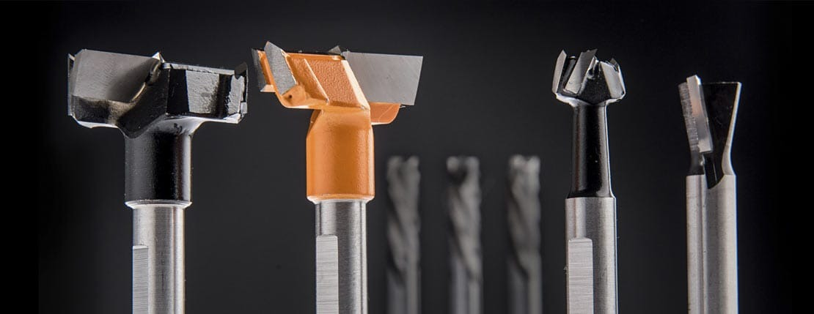
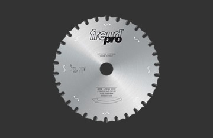
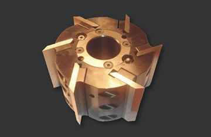
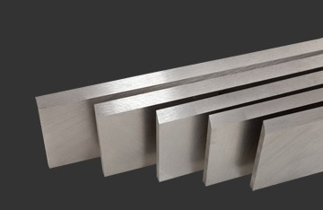

La más amplia variedad de sierras para la industria de la madera, tanto para el corte de madera sólida como compensada...

Todo tipo de fresas especiales y standard, para ranurar, cepillar, realizar rebajes, espigas, zócalos, machimbres...

La más completa gama de cabezales para los diversos trabajos tanto para molduras como para cepillar...

Cuchillas de Acero Súper Rápido aleado al 18% de Wo de alta resistencia a la abrasión y alta tenacidad.
En Woodtools contamos con un microscopio electrónico para el control previo y post afilado de tus sierras.
Las sierras son controladas antes de ser afiladas para determinar el grado de desgaste que tienen...